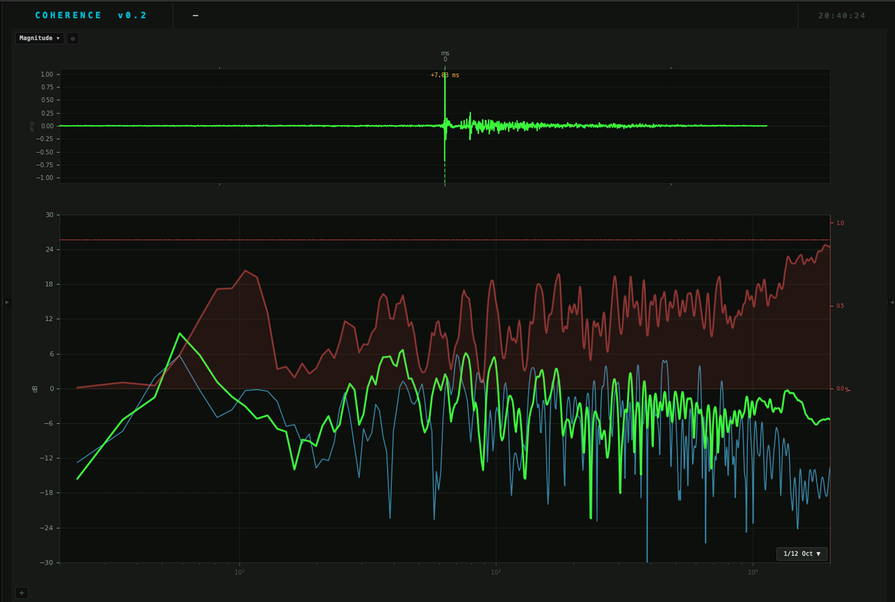

Analizador de audio en tiempo real para ingenieros de sonido en vivo. Alternativa gratuita a SMAART.
Transfer Function · Coherencia · Phase · Impulse Response · RTA 1/3-oct

Diseñado por ingenieros de sonido en vivo, para ingenieros de sonido en vivo. Sin licencias anuales, sin dongles.
Magnitud y fase del sistema en tiempo real. Suavizado 1/3, 1/6, 1/12, 1/24 de octava sobre H(f) complejo.
Overlay sobre la TF alineado al 0 dB. Te dice exactamente dónde confiar en la medición y dónde no.
Display ±180° estilo SMAART. Solo visible donde γ² supera el umbral configurable. Sin ruido visual.
Via IFFT de H(f). Eje fijo ±100 ms. El delay finder centra el impulso y compensa la fase automáticamente.
Correlación cruzada. Muestra ms, muestras y metros. Aplicar el delay compensa la pendiente de fase lineal.
Análisis de banda proporcional constante. Ruido rosa plano. 31 bandas ISO de 20 Hz a 20 kHz.
Ruido rosa, ruido blanco, tono sinusoidal (frecuencia ajustable) y sweep logarítmico 20 Hz→20 kHz.
Guarda IR, TF, Phase y Spectrum como archivos tabulados. Importables en Excel, Python, o MATLAB.
Crosshair en los tres paneles. Muestra frecuencia, nivel dB, fase y γ² en la barra de información superior.
Cada gráfica te cuenta una parte diferente de la historia. Aprender a leerlas es la diferencia entre ajustar un sistema con precisión y adivinar.
La Transfer Function (TF) es la relación entre la señal que entra al sistema y la que sale, medida en cada frecuencia. Una línea plana en 0 dB significa que el sistema reproduce todas las frecuencias con la misma amplitud — el ideal.
En la práctica, verás picos y valles: el parlante tiene resonancias, la sala añade reflexiones, la posición del micrófono afecta el resultado. La TF te muestra exactamente cuánto boost o corte tiene el sistema en cada frecuencia.
La coherencia γ² mide la correlación entre la señal de referencia y la señal medida, frecuencia por frecuencia. Varía de 0 a 1. Un valor de 1 significa correlación perfecta — la señal medida es completamente predecible a partir de la referencia.
Valores bajos de coherencia pueden indicar: ruido de fondo en el recinto, reflexiones tardías, no linealidades del sistema, o simplemente una relación señal/ruido insuficiente. En esas frecuencias, la TF no es confiable.
La fase muestra el desfasaje entre entrada y salida en cada frecuencia, medido en grados (-180° a +180°). Una pendiente de fase lineal negativa indica puro retardo de propagación — el sonido llega tarde porque viajó una distancia.
Después de compensar el retardo con el Delay Finder, la fase residual revela el comportamiento real del sistema: problemas de suma entre subwoofers y tops, alineamiento temporal de múltiples cajas, o problemas de cruce entre drivers.
H_comp = H · e^(+j·2π·f·τ)
La Respuesta Impulso (IR) es la representación temporal de H(f). Se obtiene aplicando la Transformada Inversa de Fourier a la Transfer Function. Te muestra cuándo llega el sonido directo, las primeras reflexiones del recinto, y la envolvente de la reverberación.
El pico principal es el sonido directo. La distancia al origen indica el retardo de propagación. Los picos secundarios son reflexiones — algunas pueden generar problemas de suma a ciertas frecuencias.
El mismo workflow que usarías en cualquier sistema PA profesional. Rosa, mide, corrige.
Canal de medición: micrófono de medición (omnidireccional). Canal de referencia: loopback de la consola o señal post-procesador. Probado con Focusrite Scarlett 18i8 — funciona con cualquier interfaz compatible con ASIO / CoreAudio.
Seleccionar DEV IN (interfaz de entrada), CH MED (canal del micrófono) y CH REF (canal de referencia). Ajustar CH MED=1 y CH REF=4 para la configuración estándar con la Scarlett 18i8.
NOISE ● activado con señal PINK. Ajustar GAIN para obtener un nivel de medición adecuado (γ² > 0.85 en la mayoría del espectro). Aumentar AVERAGES si el ambiente tiene ruido de fondo elevado.
Presionar ▶ FIND. El sistema calcula el retardo por correlación cruzada, centra el impulso en el eje IR, muestra el valor en ms/muestras/metros, y compensa automáticamente la pendiente de fase lineal. La fase ahora es legible.
TF: identificar problemas de magnitud. Coherencia: verificar dónde la medición es confiable. Fase: verificar alineamiento temporal. IR: identificar reflexiones problemáticas. Usar el cursor para leer valores exactos en cualquier frecuencia.
Sin licencias. Sin dongles. Sin vencimientos. Open source bajo licencia GPL v3.
El código es tuyo para estudiar, modificar y distribuir.
git clone https://github.com/JorgeChiles/coherence.git
cd coherence
pip install -r requirements.txt
python run_coherence.py
macOS: primera vez → clic derecho en Coherence.app → Abrir (Gatekeeper)
Requiere Python 3.10+ para instalación desde fuente